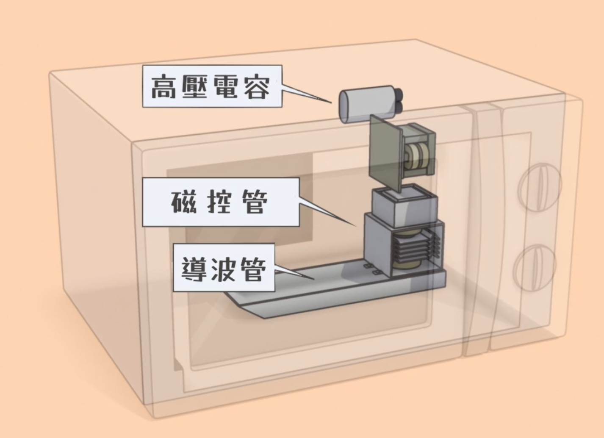
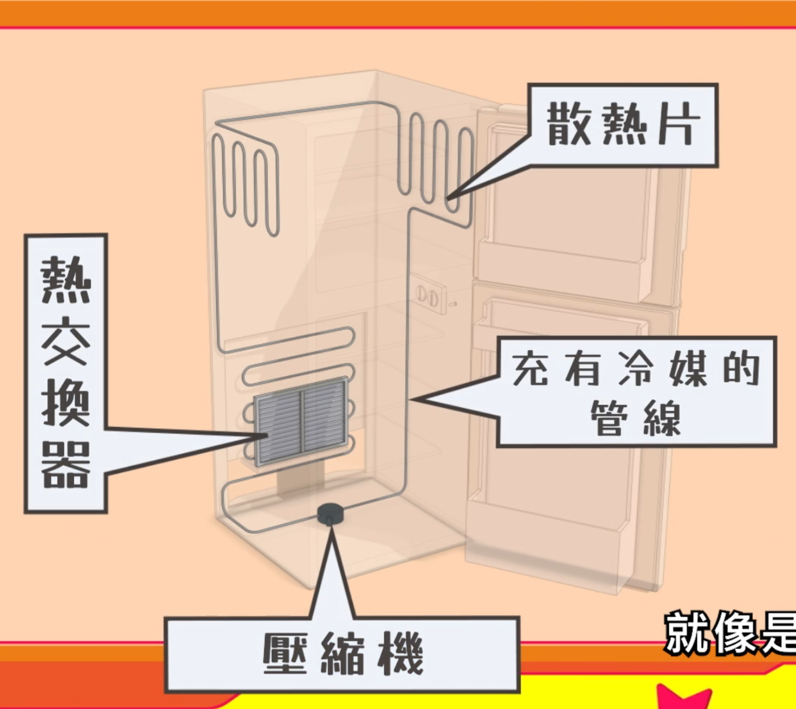
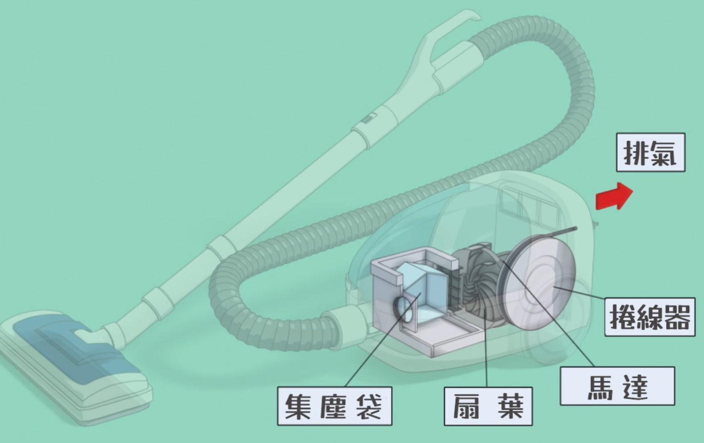
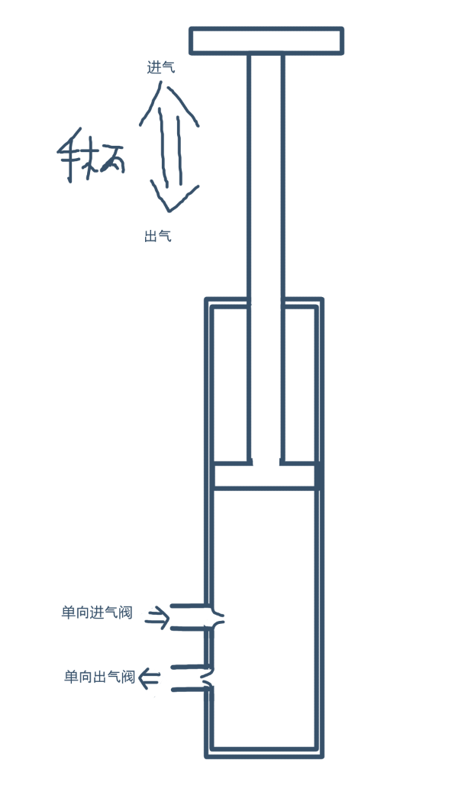
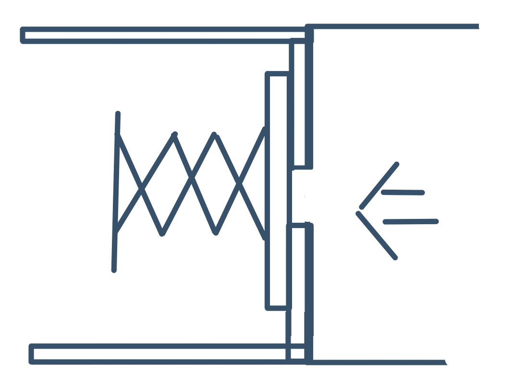

外星人姆姆笔记1——微波炉，冰箱，吸尘器
外星人姆姆这部番意外地有教育意义，我也能学到东西，虽然可能无意义，但学到东西这件事本身就能带来快乐。
这里是前三集的（实际上是前两集的，第三集的自动门现在不想研究，虽然看上去也不复杂，那是机械原理相关的部分了，红外线传感器则是数电部分，目前不太关心，插头啥的我早知道了）。
我想看到的……其实更多是……杂学，生活常识之类的。
微波炉
第一集讲到微波炉和冰箱，这俩都是和热相关的。
微波炉是使用微波加热食物，具体来说，微波会让食物中的水分子自旋，从而产生摩擦，产生热量，要联想的话。就是冬天摩擦手掌感觉手掌更热。

以及，微波本质上和手机信号，和光，是一样的，都是电磁波，同时也都是光子的集合。这就是说，波粒二象性，波即电磁波，粒即光子。这时候也可以说，微波炉和手机，实际上在时刻发出光子去蒸熟食物，去通信。
这里有一个我以前从未联想到过的东西——微波在金属上的反射，和光在物体上的反射，其实是 tmd 同一种现象，教科书上居然不讲如此有趣的东西。显然这里有某种东西可以做大一统，但我是没心思研究这个啦。
冰箱
然后是冰箱，冰箱的原理可以说有下面的几个：
- 蒸发吸热，即出汗时或洗完澡后会感觉更凉爽
- 凝结放热，这个在生活中好像很难找到例子，但知道它是蒸发吸热的反作用即可意识到它会放热
- 气压更低时，液体更容易沸腾和蒸发
- 气压更高时，液体更容易凝结
- 关键：绝热情况下，气体、液体压强增大时，温度升高，压强减小时，温度降低
冰箱可以说就是通过控制制冷剂的气压造成蒸发吸热-凝结放热的循环，只不过吸热发生在冰箱内壁，放热发生在冰箱外部。

控制气压的关键有两个部分——压缩机-冷凝器和节流阀-蒸发器：
- 压缩机-冷凝器在冰箱外部，压缩机压缩气体制冷剂，强迫它变得高温高压，然后送入冷凝器，在冷凝器中，高温的制冷剂和外界空气交换热量，让它冷却成液体去放热，再送入节流阀（这里的高温其实是我们不想看到的……？）
- 节流阀-蒸发器在冰箱内部，液体制冷剂送入节流阀，节流阀会把制冷剂的压强减小（想象雾化喷嘴，把制冷剂变成气体，体积增大，而且降温），该过程会极大地降低制冷剂的温度，然后送入蒸发器，低压的制冷剂在蒸发器中蒸发成气体吸热，再送入压缩机完成循环
flowchart LR
subgraph 外部
压缩机 -->|压缩后的高温高压气体制冷剂| 冷凝器
end
subgraph 内部
节流阀 -->|低温低压气液混合制冷剂| 蒸发器
end
direction LR
冷凝器 <-->|通过温差交换热量| 空气
蒸发器 <-->|通过温差交换热量| 冰箱内部
蒸发器 -->|低压气体制冷剂| 压缩机
冷凝器 -->|室温高压液体制冷剂| 节流阀
注意各部分的产生：
- 压缩机：压缩后的高温高压气体制冷剂
- 冷凝器：（略高于）室温高压液体制冷剂（注意这里气体到液体的步骤中，压强没变！因为容积是固定的）
- 节流阀：低温低压气液混合制冷剂
- 蒸发器：低压气体制冷剂（这里从液体到气体的步骤中压强同样没变，因为容积固定）
雾化喷嘴，以及这里的节流阀，会降低温度，这是热力学中的节流效应。
注意——这里真正起作用的是压缩机和节流阀——通过调整压强去提升、降低温度到极致，这里得到的温度，单凭热交换是做不到的。
注意——在压缩机中，压强变高，在节流阀中，压强变低，这两个过程中，没有相变；而在冷凝器中，气体变为液体，在蒸发器中，液体变为气体，这两个过程中，有相变没有压强变化。这就是为什么冰箱需要特殊的制冷剂——这个制冷剂要能在压强不变的情况下进行相变，要能在压强变化的过程中不进行相变，水显然是难以做到这一点的。
吸尘器（和风扇，气泵）
吸尘器，风扇，气泵，其工作原理实际上都是基于制造气压差，从而造成气体的流动。
先从风扇开始，因为它最单纯。按照常识来说，会以为风扇是扇叶旋转，推动空气前进，但这实际上并不完全准确——实际的现象是，风扇旋转时，把旋转部分的空气推走，造成一片低压区，然后后方的空气随着压差填充进这片低压区，然后再被扇叶去推走。因此，扇叶的形状是非常重要的，它会决定风的流向。可以注意到，这里也是一个循环。
无扇叶的风扇同样是此原理——扇叶隐藏在内部，通过低压区去加速空气流动。但这里不研究。
然后，吸尘器，上面说到风扇会制造气压差，吸尘器同样利用气压差——吸尘器内部有一个风扇往外吹空气，从而在内部造成低压区，造成吸尘效果。这个又是和常识不同。

然后，气流中途在中途有集尘袋和过滤网，这使得吸尘器排出的空气更干净（想不到吧，虽然说是排出，但其实是吹出）。
这个则是我感兴趣的部分了，气泵，气泵的原理是怎样的？下图应该是表示了气泵的核心工作原理——活塞，以及进气、出气单向阀。按下活塞时，气泵内部气压增大，大于外部（比如大气压），因此因为气压差，出气单向阀打开，气泵内部空气从出气口出去；拉起活塞时，气泵内部气压减小，小于外部（比如大气压），因此因为气压差，进气单向阀打开，外界空气从进气口进来。

气泵不是真的去“抽”，“推”空气，而是通过改变内部气压去造成气压差，气体随着气压差去进行移动。这里的魔法在于单向阀。
单向阀随着气压差去打开和关闭，不需要手动操作，单向阀的该功能来自于它的物理/机械结构。
一种幻想的单向阀的实现可能是下面这样，用弹簧顶住一块挡板，这样只有挡板对面的压力，即把弹簧更压紧的压力，会把挡板挤开并使得空气通过。

本博客所有文章除特别声明外，均采用 CC BY-NC-SA 4.0 协议 ，转载请注明出处！